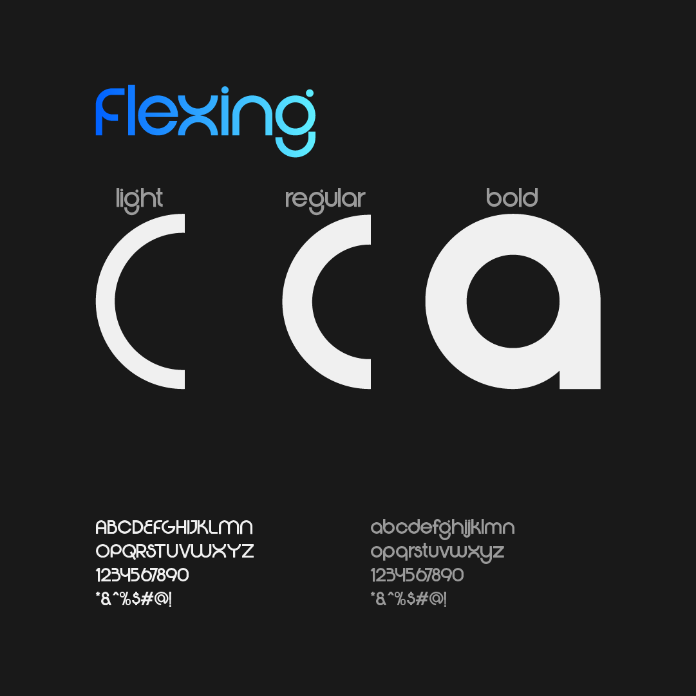

Neurodesk
Branding

Intro
Neurodesk è una startup che progetta scrivanie inteligenti basate su sistemi di Ai. L'obiettivo è migliorare l'ergonomia e il benessere di chi lavora molte ore alla scrivania, attraverso superfici e componenti capaci di adattarsi automaticamente alla postura e alle abitudini dell'utente. Il brand unisce un'estetica semplice e moderna a un idea chiara di innovazione concreta: la tecnologia che si prende cura delle persone ogni giorno.
Brief
Neurodesk nasce dall'esigenza di migliorare l'ergonomia per chi trascorre molte ore alla scrivania. Il brand doveva trasmettere innovazione, affidabilità e precisione, comunicando la promessa di un prodotto intelligente, funzionale e attento alle esigenze dell'utente. Il brief creativo richiedeva un logo che fosse minimal, moderno e facilmente riconoscibile, capace di adattarsi a diverse applicazioni digitali e fisiche, dalle interfacce ai material del prodotto stesso. L'obiettivo era costruire un'identità visiva coerente, che unisse tecnologia avanzatae cura del dettaglio, senza risultare fredda o distante.
Ricerca & Insight
Per definire un'identità forte e coerente per Neurodesk, il primo passo è stata un analisi approfondita del contesto e dei competitor. Dal confronto col altre aziende di scrivanie intelligenti e soluzioni ergonomiche è emerso che molte comunicazioini erano tecniche ma fredde.
Ho quindi creato una moodboard e palette colori di riferimento, cercandoispirazione nel mondo della tecnologia avanzata, del design minimalista e delle applicazioni di intelligenza artificiale. L'obiettivoera individuare un equilibrio tra innovazione, affidabilità e precisione nei dettagli, valori chiave del brand
Dall'analisi sono emersi alcuni insight fondamentali:
- L'importanza di un design semplice e intuitivo, che comunichi chiaramente i benefici del prodotto.
- La necessità di trasmettere fiducia e sicurezza, elementi cruciali per un prodotto tecnologico.
- Il valore di un approccio umano e attento alle esigenze dell'utente, per differenziarsi in un mercato competitivo.
Sistema visivo
Logo
Il logo di Neurodesk nasce dalla lettera "N", reinterpretata in chiave geometrica. La costruzione è stata sviluppata su una griglia a tre colonne, utilizzando quattro cerchi con raggio pari alla larghezza di una colonna.
Questo sistema modulare permette di ottenere:
- proporzioni equilibrata
- curve coerenti tra loro
- un segno essenziale ma distintivo
Le intersezioni tra i cerchi generano un ritmo visivo che richiama l'idea di connessioni neurali e di flusso continuo tra utente e tecnologia. La precisione costruttiva del marchio comunica chiaramente i valori del brand: innovazione, affidabilità e cura del dettaglio.
Palette colori
La palette di Neurodesk è stata progettata per comunicare tecnologia, innovazione e cura ingegneristica. Ogni colore ha una funzione precisa: alcuni costruiscono il carattere del brand, altri garantiscono leggibilità e struttura.

Frozen Lake:
Colore principale (parte iniziale del gradiente)
Nel graphic design comunica:
- freschezza e innovazione
- chiarezza mentale (ordine, concentrazione)
- comfort visivo
Usato nel gradiente del logo, rappresenta il lato più "umano" e leggero della tecnologia.
Electric Sapphire:
Colore principale (parte finale del gradiente)
Questo blu acceso introduce energia controllata.
Comunica:
- tecnologia avanzata
- precisione tecnica
- dinamismo e progresso
Nel logo, unito a Frozen Lake, crea una transazione che racconta il passaggio da "semplice superficie" a
scrivania intelligente.
Il gradiente non è solo estetico, ma simbolico: rappresenta l'evoluzione continua e l'adattabilità del prodotto.
Carbon Black:
Colore di struttura
Nel graphic design, il nero profondo ha una funzione precisa:
- aumenta il contrasto e la leggibilità
- comunica affidabilità e solidità
- rende il brand più elegante e professionale
È ideale per testi, elementi tecnici e interfacce, dove il contenuto deve risultare chiaro e stabile.
Platinum:
Colore di struttura
Platinum serve come base neutra:
- crea spazi puliti
- migliora la gerachia visiva
- rafforza l ímpressione di ordine, minimalismo e precisione
Nel graphic design, questo tipo di grigio chiaro è spesso associato a prodotti high-tech e industrial design, perché lascia andare le forme e gli elementi funzionali
Tipografia

Per Neurodesk è stato scelto Flexing, un carattere sans-serif dal taglio contemporaneo, pensato
per comunicare tecnologia e rigore senza perdere leggibilità.
Nel contesto del brand, Flexing svolge diverse funzioni:
-
Innovazione
Le forme geometriche e le curve pulite richiamano il mondo high-tech e dei dispositivi inteligenti. Trasmette l'idea di prodotto avanzato, progettato con criteri ingegneristici. -
Affidabilità
L’equilibrio tra spessori e proporzioni rende il testo stabile e ordinato. Questo aiuta a comunicare solidità e professionalità, elementi fondamentali per una startup che promette ergonomia e supporto nel lavoro quotidiano. -
Precisione nei dettagli
I terminali netti e la struttura modulare riflettono l’attenzione al design industriale. Ogni elemento appare controllato, misurato, essenziale.